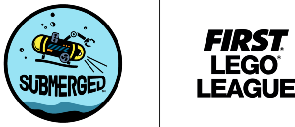

عن المشروع
يهدف هذا المشروع إلى رفع مستوى الوعي بالبيئة البحرية، وتعزيز فهمنا لأهمية المحيطات في الحفاظ على التوازن البيئي العالمي.
حقائق عن المحيط
- المحيطات تغطي أكثر من 70% من سطح الأرض.
- تُنتج المحيطات حوالي 50% من الأكسجين على كوكب الأرض.
- تعتبر المحيطات مصدرًا غنيًا للتنوع البيولوجي والموارد الطبيعية.
- الأنشطة البشرية مثل التلوث والصيد الجائر تهدد نظم المحيط البيئية.
الاستبيان
شارك معنا في استبياننا حول الوعي البيئي البحري:
شارك في الاستبيانأهمية المشروع
يسعى المشروع إلى:
- رفع مستوى التفاعل مع البيئة البحرية من خلال توفير منصات تعليمية تفاعلية.
- تعزيز السلوكيات المستدامة من خلال تحسين الوعي المجتمعي.
- استخدام تقنيات حديثة مثل النماذج ثلاثية الأبعاد لإثراء المحتوى التعليمي.
- دعم السياحة البيئية وتعزيز المعرفة بالتراث البحري.